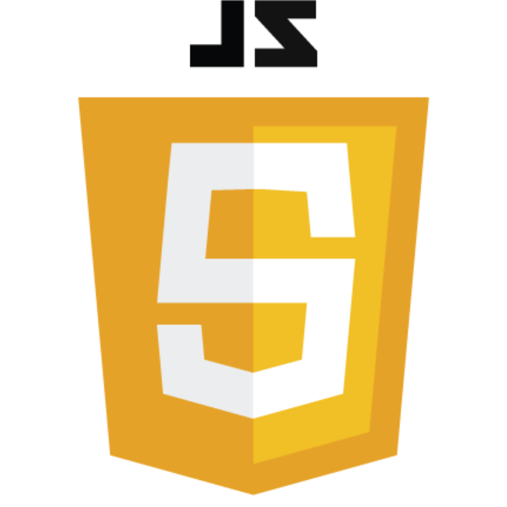
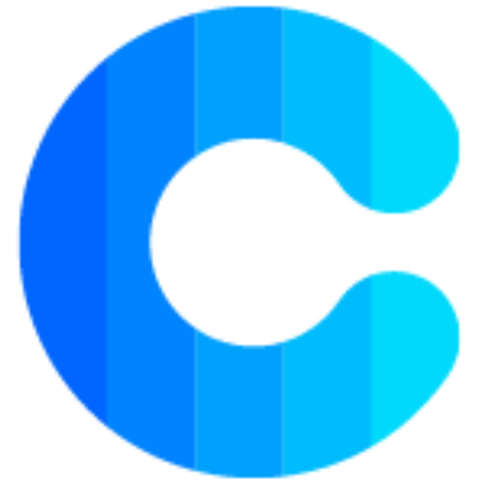
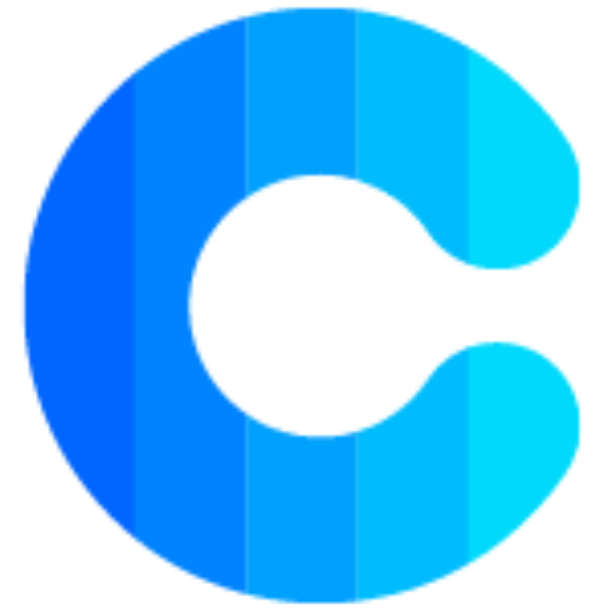

About Me
Launching a career in software development was something I never envisioned myself doing. But I found myself facing the big life questions in 2020, like “what do you want to contribute to the world?” At that time, a friend described what she enjoyed about her career as a software developer. She phrased her work as “problem solving,” and that sounded incredibly appealing. I did research on what it meant to be a software developer. I started with self-paced classes on Team Tree House, then tried out NSS’s jumpstart class, before enrolling in their full-time boot camp because I found that I enjoyed using logic in JavaScript, my creativity that CSS lends itself to, and the teamwork building an app requires.
Group Projects
Nutshell
This project was a collaborative effort of myself and three classmates. We worked together using individual and group programing to plan, build and implement features for a planning app. Features included forms to schedule events, task lists, favorited news articles, weather of the day that used an external API. My contributions were the weather feature, and the events feature.
Technology Used:
Programing Language


Editing Tool

ERD

Holiday Road
This project was a collaborative effort of myself and four classmates. We worked together using peer and group programing to plan, build and implement features for a planning app. Features included sorting features to plan a trip location, food options monuments and weather of the day that used an external API. My contributions were the weather feature, and all group efforts.
Technology Used:
Programing Language

Editing Tool
ERD
Solo Projects
Find A Farmer
This project was a solo project. A CRUD web application, built with React, that allows environmentally minded individuals, who would like to prevent food waste from going to landfills to connect with local pig farmers, who have agreed to welcome visitors to feed food scraps to their pigs. The result being a decrease of food waste entering landfills, and a budget friendly alternative for farmers to be able to provide their pigs with a nutritious diet.
Technology Used:
Programing Language

Editing Tool
ERD

 
